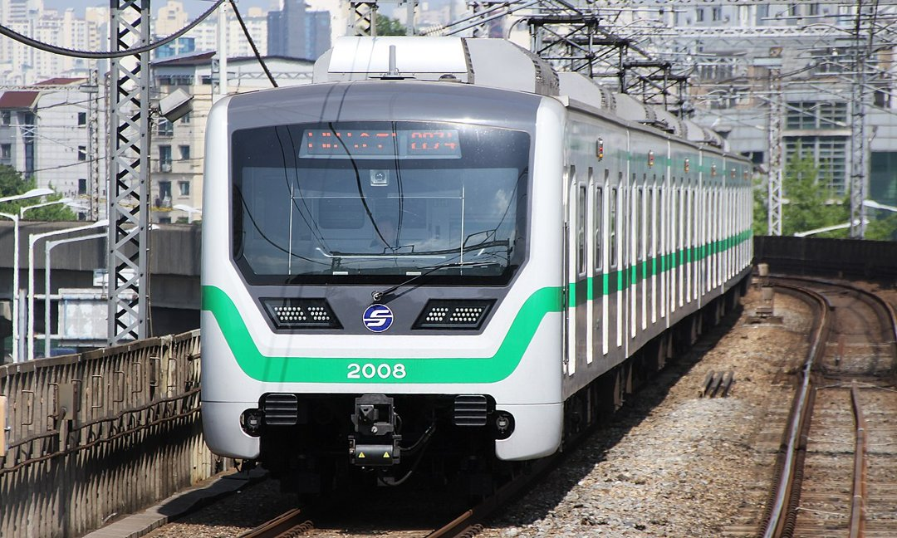

본문
📷 사진 1 자리

▲ 서울 지하철 2호선 열차 · 사진: Mtattrain / CC BY-SA 4.0 / 위키미디어 공용
서울교통공사노조가 11월 20일 첫차 근무부터 준법투쟁에 들어갔어요. 열차 횟수는 그대로지만 정차가 길어지면서 몇 분씩 늦어질 수 있어요. 노조는 협상이 안 되면 25일부터 무기한 총파업을 하겠다고 예고했어요. 파업하면 지하철이 정말 멈추는지, 지난 몇 년은 어떻게 끝났는지 궁금하실 거예요.
3줄 요약
- 준법투쟁 중에도 하루 3,183회 운행과 배차 간격은 그대로예요. 다만 정차가 길어져 환승역 중심으로 늦어질 수 있어요.
- 지하철은 법상 필수공익사업이라 파업해도 출근 시간 운행은 유지돼 왔어요. 2024년 서울시 계획은 출근 시간 100%였어요.
- 최근 2년은 파업 예고 직전 타결로 끝났어요. 쟁점은 임금보다 인력 감축 계획이에요.
지금 무엇이 달라졌나
기관사들은 운행 시각을 맞추려고 속도를 올리거나 정차 시간을 줄이지 않아요. 규정에 적힌 대로만 운전해요. 차량·시설·전기 분야는 위험 작업을 두 명이 함께하고 시간 외·휴일 근무를 거부해요.
서울교통공사는 하루 운행 횟수를 평소처럼 3,183회로 유지한다고 밝혔어요.
| 시간대 | 계획 배차 간격 |
|---|---|
| 출근 시간 | 2.5~4.5분 |
| 퇴근 시간 | 3~6분 |
| 평시 | 5~9분 |
같은 날 새벽 2호선 성수지선에서는 열차가 선로전환기를 망가뜨려 성수~신설동 운행이 멈췄어요. 보도들은 이 사고를 준법투쟁과 별개 장애로 다뤘어요.
파업하면 지하철이 멈출까
결론부터 말하면 멈추지 않아요. 도시철도는 「노동조합 및 노동관계조정법」이 정한 필수공익사업이에요. 파업 중에도 꼭 필요한 업무는 유지해야 해요.
📷 사진 2 자리

▲ 서울 지하철 2호선 객실 · 사진: R151trains / CC0 / 위키미디어 공용
가장 최근 비슷한 상황이었던 2024년 12월, 서울시는 파업에 대비한 비상수송대책을 미리 내놨어요. 이번 대책은 아직 나오지 않았으니 참고용으로 보세요. 시내버스는 출근 집중배차를 06~09시, 퇴근은 17~20시로 한 시간씩 늘렸어요.
| 2024년 12월 서울시 계획 | 내용 |
|---|---|
| 출근 시간(07~09시) | 1~8호선 100% 운행 |
| 퇴근 시간(18~20시) | 총 86% 수준 |
| 시내버스 | 집중배차 1시간 연장, 6,448회 증회 |
| 확보 인력 | 평시의 80%, 약 1만 3천 명 |
당시 공사는 승무 등 필수 분야 인력 5,733명과 협력업체·본사 지원 대체 인력 7,374명을 확보했어요. 서울시 직원 124명도 역사 지원 근무에 나섰고요. 개인택시조합에는 출퇴근 시간 운행을 늘려 달라고 요청했어요.
노조 쪽 자료를 인용한 쿠키뉴스 보도에 따르면 이번 파업 때 평일 운행률은 1호선 53.5%, 2호선 본선 72.9% 수준이에요. 출근 시간을 지키는 대신 낮과 저녁 운행이 줄어드는 구조예요.
코레일 파업과 겹치면
1호선과 3·4호선의 서울 밖 구간, 경의중앙선 같은 노선은 코레일이 운영해요. 철도노조도 12월 총파업을 예고한 상태라 두 파업이 겹치는지도 봐야 해요.
2024년에도 코레일과 교통공사 노조가 하루 차이로 파업을 예고했어요. 당시 서울시는 둘이 동시에 파업해도 출근 시간 운행률 96.1%, 퇴근 시간 83.9%를 유지할 수 있다고 밝혔어요. 시내버스 예비 차량을 모두 투입해 1,615회를 더 늘리는 계획도 세웠고요.
쟁점은 임금보다 인력
노조 요구는 네 가지예요. 인력 2,212명 감축 계획 철회, 현장 안전 인력 1,313명 충원, 임금 3.5% 인상, 안전 업무 2인 1조 의무화예요.
공사는 누적 적자를 줄이려면 감축이 불가피하다는 입장이에요. 서울경제 보도에 따르면 2021년 행정안전부가 공사채 발행을 승인하면서 경영혁신 계획 이행을 조건으로 걸었어요. 서울일보는 2,212명 가운데 684명은 이미 줄었고 1,528명은 보류됐지만 철회되지는 않았다고 전했어요.
노조는 남은 감축까지 하면 현장 안전에 공백이 생긴다고 맞서요. 해마다 연말 협상에서 같은 숫자가 다시 쟁점이 되는 이유예요.
'2인 1조'가 요구에 들어간 데는 이유가 있어요. 2016년 5월 구의역에서 혼자 스크린도어를 고치던 열아홉 살 정비 노동자가 열차에 치여 숨졌어요. 이 사고 뒤로 위험 작업은 두 명이 함께해야 한다는 원칙이 지하철 안전 논의의 출발점이 됐어요. 노조는 인력이 줄면 이 원칙을 지키기 어렵다고 주장해요.
지난 3년은 어떻게 끝났나
| 시기 | 결과 |
|---|---|
| 2023년 11월 | 경고 파업 진행, 출근 100%·퇴근 87% 목표 |
| 2024년 12월 | 6일 새벽 타결, 파업 철회 |
| 2025년 12월 | 임금 3%·820여 명 충원 합의, 파업 철회 |
최근 2년은 모두 파업 예정일 직전에 합의가 나왔어요. 이번에도 24일 밤 교섭 결과가 출근길을 가를 가능성이 커요.
출근길 대처 순서
- 전날 밤 서울교통공사 공지와 '또타지하철' 앱에서 내 호선의 지연 안내를 확인하세요.
- 환승이 많은 경로는 10~20분 일찍 나서세요. 정차가 길어지면 환승마다 차이가 쌓여요.
- 버스로 바꿀 수 있는 구간은 대체 경로를 하나 찾아 두세요. 파업 때는 버스 집중배차 시간이 늘어난 전례가 있어요.
- 퇴근 시간이 더 불안해요. 2024년 계획도 퇴근 시간 운행률은 출근보다 낮았어요.
- 버스 정류소 안내기와 서울시 교통정보 누리집(토피스)에서 실시간 상황을 볼 수 있어요. 2024년 대책 때도 이 창구로 운행 정보를 알렸어요.
- 파업 소식은 다산콜센터(02-120)에서도 물어볼 수 있어요.
자주 묻는 질문
Q. 준법투쟁이면 열차가 줄어드나요?
아니에요. 운행 횟수는 3,183회 그대로이고, 정차가 길어져 늦어지는 거예요.
Q. 25일 파업하면 출근을 못 하나요?
지하철은 필수공익사업이라 출근 시간 운행이 유지돼 왔어요. 2024년 계획은 출근 시간 100%였어요.
Q. 파업은 확정인가요?
아니에요. 노사 교섭 결과에 따라 달라지고, 최근 2년은 직전에 타결됐어요.
파업이 현실이 돼도 출근길보다 퇴근길과 환승역이 더 힘들어지는 구조예요. 법이 지키는 건 출근 시간대 운행이라, 저녁 약속이나 늦은 퇴근이 잦은 분은 25일 이후 일정부터 대체 경로를 생각해 두는 게 현실적이에요.
25일 파업 여부는 교섭 결과가 나오는 대로 서울교통공사 누리집에 공지돼요. 서울시 비상수송대책도 그때 함께 발표되니 24일 밤에 한 번 더 확인하세요.
함께 보면 좋은 이슈
- 철도노조 12월 총파업 예고 연말 기차 예약 전 확인할 것
- 지하철 비상벨 언제 누를까? 불편 민원 신고 방법과 주의사항